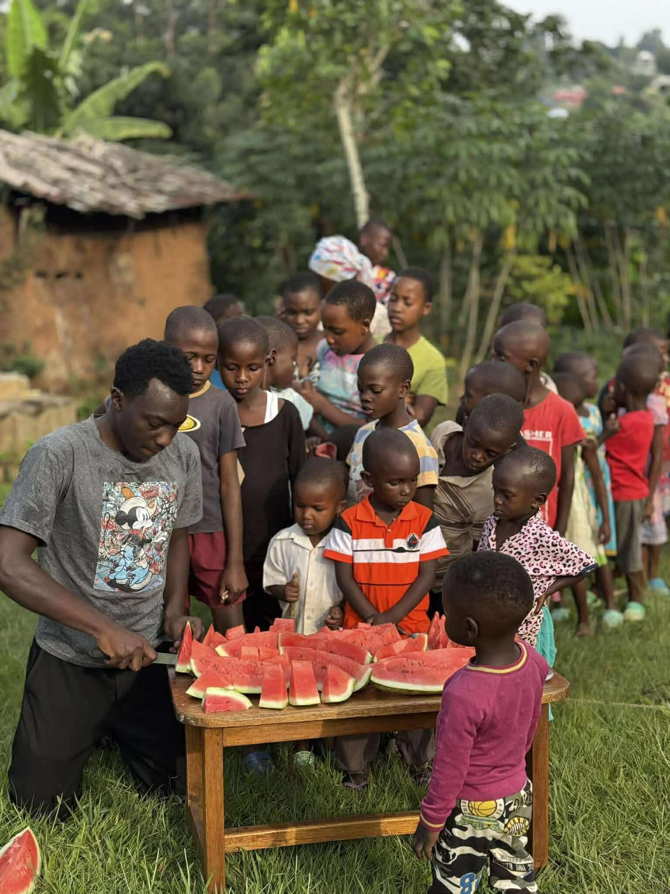
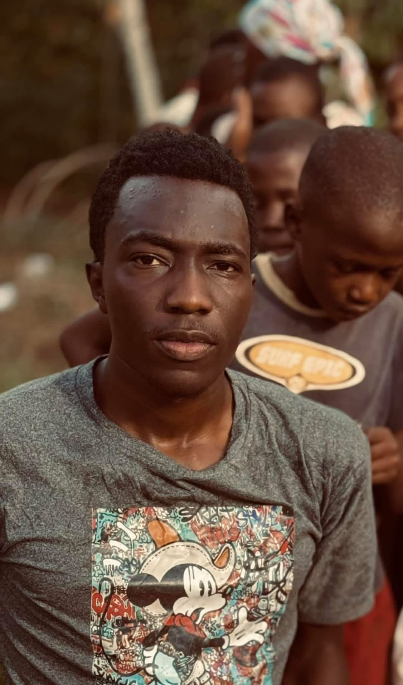

Food
Staple foods and larger food purchases that can lower the household's daily expenses.

A small community care initiative in Uganda
Balanja Mark is caring for ten children—six orphaned children and four younger siblings—while working toward a more secure home for them.

Our story
I am 22 years old and currently care for ten children in Bulera, Uganda.
Six of the children are orphaned, and four are my younger brothers and sisters. We currently rent a small house for approximately £50 per month. At present, only six of the children are able to attend school because we cannot afford school costs for everyone.
I know what it means to grow up without parents. I lost both of my parents in 2021, and this experience motivates me to provide the children with safety, food, education and hope for a better future.
Food usually costs around £10 per day. When we can buy larger quantities in advance, the daily cost may be reduced to approximately £5.
Our long-term goal is to raise enough money to build a modest two-room house for the children and my family, giving them a more stable place to live.
What support provides
Support is intended for the children's basic needs and for creating a more secure home.
Staple foods and larger food purchases that can lower the household's daily expenses.
School fees, uniforms and learning materials so that all ten children can attend school.
Monthly rent now, alongside the longer-term goal of constructing a simple two-room home.
Daily life
Transparency
Children's Hope Care was registered as a Community-Based Organisation (CBO) with Mityana District Local Government under registration number BUL/463/2023.
The displayed certificate was valid from 9 March 2023 to 9 March 2024 and has expired. According to Balanja Mark, the registration could not be renewed because the renewal costs could no longer be paid. The expired document is shown for historical transparency and should not be presented as evidence of current registration.
Support the children
If you would like to support the children or learn more about their current needs, you can contact Balanja Mark directly via WhatsApp or email.
Use WhatsApp to contact Balanja directly about the children, current needs or ways to help.
Before sending money, donors should confirm the recipient, purpose and payment details directly. Receipts and dated updates should be requested where possible.